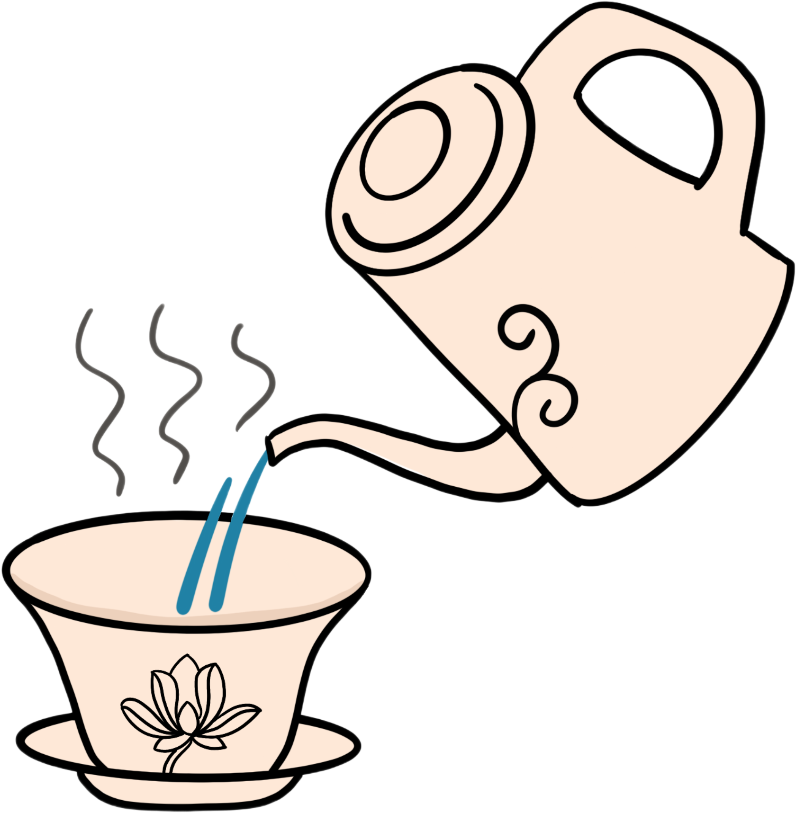

玉碗光含仙掌露，
温杯

开始冲泡前，先用开水烫下茶具，清洁茶具的同时，也可以洗掉之前泡茶留下的味道，避免后续泡茶串味；
茶具温杯后可以激发茶香，我们平常用盖碗泡茶，温杯后，闻干茶香，茶香更显。另外茶杯温杯后，一定程度上延缓茶汤过快冷却，可以更好的保留茶汤口感。
投茶

上投法：
注水→投茶
“上投”指的是先在杯中注七分满85℃左右的水，再进行投茶，嫩度越好的绿茶所要求的水温越低。
中投法：注水→投茶→缓冲泡
“中投”指的是先在杯中注入三分满适宜温度的水，然后投茶，轻轻转动浸润茶叶，待其慢慢舒展后再注水至七分满。
下投法：投茶→注水
“下投”就是我们日常生活中常用的方法，先放茶，再注水至七分满，然后静待其自然舒展。
醒茶
对于茶饼，可以从中间凹槽处向外入刀解茶，手工压制的茶饼，可从边侧解茶;茶砖则可以从侧面入刀，比较容易将茶剖成两片，而后再分成小块。解茶时尽量保持叶片的完整性，顺着叶片的规律去开解。将解散的茶摊臵于清洁、蔽荫处，使其与空气充分接触。在这期间可在茶叶上覆盖一层宣纸或棉纸，避免落入尘土。并且摊放的环境不能有异味，以免吸收杂昧影响茶叶品质，同时还要避免日光灯长时间照射。
冲泡

水温以80℃~85℃为宜，茶水比例以1：50为佳，冲泡时间为2~3分钟，泡出来的茶，汤色清翠碧绿而透明清澈，最好现泡现饮。冲泡温度过高或时间过久，茶叶中的多酚类物质容易被破坏，茶汤不但会变黄，其中的芳香物质也会挥发散失。瓷杯冲泡时先用四分之一的水把茶叶润一润，过20秒或半分钟再冲水饮用，一般不盖盖子，否则茶汤会发黄。
出汤
快出汤：把水注入盖碗之后，盖上盖子，迅速把茶汤倒至公道杯，五秒快出水，七秒出完水，这是快出水的标准，也就是全程冲泡不超过10s的时间。
坐杯;在水注入盖碗之后，盖上盖子，让热水在盖碗里闷一段时间，再把盖碗端起来，将茶汤倒入公道杯中的泡茶方式。
分茶
选择合适的茶叶品种：不同的茶叶品种适合不同的压制方法；
合理控制茶叶湿度：在压制过程前要确保茶叶的湿度适当；
选择适当的压力和压制时间：压制压力和时间的选择对茶叶的质量和口感有重要影响;
均匀分布茶叶：在进行压制之前，需要将茶叶均匀地分布在模具中，以确保茶叶整体受力均衡。
适当的贮存和陈化：压制完成后，茶叶需要适当的贮存和陈化，以使茶叶的口感和香气更好。
在贮存过程中，需要确保茶叶避免阳光直射以及防潮，保持适当的湿度和通风。
合理控制茶叶湿度：在压制过程前要确保茶叶的湿度适当；
选择适当的压力和压制时间：压制压力和时间的选择对茶叶的质量和口感有重要影响;
均匀分布茶叶：在进行压制之前，需要将茶叶均匀地分布在模具中，以确保茶叶整体受力均衡。
适当的贮存和陈化：压制完成后，茶叶需要适当的贮存和陈化，以使茶叶的口感和香气更好。
在贮存过程中，需要确保茶叶避免阳光直射以及防潮，保持适当的湿度和通风。
品饮
饮茶要有合理的时间，适当的数量，茶水比例要适宜，冲泡次数应茶而异。一般成年健康的人一日饮茶12克左右。茶类选择可应季节和习惯而定，一般认为红茶性热，绿茶性凉，夏天饮绿茶更能增加消暑作用，而冬天喝红茶具有和胃暖身的作用。